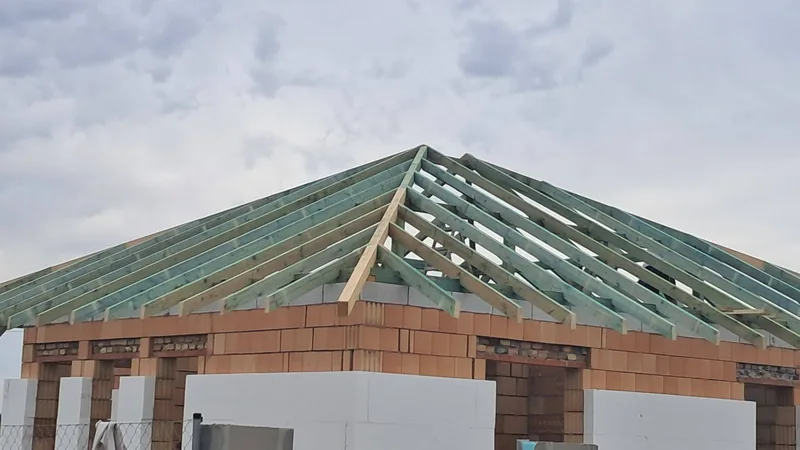

Új fedés, megújuló tető.
Tetőfedés és fedéscsere az épülethez igazítva. Az egyeztetéshez hasznos a meglévő fedés típusa, a tető hozzávetőleges mérete és néhány áttekintő fotó.
Tetőfedési munkák ↗PEST VÁRMEGYE · VÁCI JÁRÁS
Tetőfedést, ácsmunkát, kerti kiülőt vagy fa kocsibeállót tervez? Bokrodi Jánossal közvetlenül egyeztethet a Püspökszilágy területén megvalósuló munkáról.
Kiszállás és vállalási időpont előzetes egyeztetéssel.

A MUNKA HELYSZÍNE
Püspökszilágy Pest vármegye Váci járásához tartozik. Az egyeztetés során a településnév mellett a munkaterület pontos címére és megközelíthetőségére is szükség van.
Jelezze, ha az épület külterületen, szűk utcában vagy korlátozottan megközelíthető telken áll. Az anyagbeszállítás, a tárolás és a munkaterület kialakítása befolyásolhatja a kivitelezés szervezését.
Váci járás településlistája ↗AMIBEN SEGÍTHETÜNK
Tetőfedés és fedéscsere az épülethez igazítva. Az egyeztetéshez hasznos a meglévő fedés típusa, a tető hozzávetőleges mérete és néhány áttekintő fotó.
Tetőfedési munkák ↗Fa tetőszerkezet építése, javítása és cseréje. Felújításnál a meglévő faelemek állapotát, új építésnél a tervet és a csatlakozásokat kell áttekinteni.
Ácsmunkák részletesen ↗Kerti kiülők és pavilonok az elképzelt használathoz. Gondolja át a méretet, az elhelyezést, a fedést és a munkaterület megközelíthetőségét.
Kerti kiülők ↗Egy- vagy többállásos fa kocsibeállók. Az autók száma mellett a beállási irány, az oszlopok helye, a szabad magasság és a vízelvezetés is számít.
Fa kocsibeállók ↗TELEFONOS EGYEZTETÉS ELŐTT
Püspökszilágy területén adja meg az utcát vagy településrészt, a bejutás lehetőségét és azt, van-e hely az anyagoknak.
Tetőfedésnél a tető becsült felületét és fedését; kiülőnél vagy beállónál a szélességet, hosszúságot és kívánt magasságot érdemes összegyűjteni.
Hasznosak a biztonságosan, földről készített áttekintő fotók. Tetőfelújításnál jelezze a beázást vagy látható sérülést; a képek átadásának módját telefonon egyeztetjük.
Mondja el, mikorra tervezi a kivitelezést. A felmérést, az anyagokat és a vállalás részleteit a feladat ismeretében pontosítjuk.
Az árat a műszaki tartalom és a helyszíni adottságok határozzák meg. Árlista és árazási tudnivalók ↗
NÉZZE MEG, HOGYAN DOLGOZUNK
Az érdi családi ház tetőépítését saját fotókon mutatjuk be a szerkezet összeállításától a cserepezésig. Ez az album Érden készült munkánkat mutatja be; további helyszínek a referenciaoldalon találhatók.
Munkafotók megtekintése ↗Tetőszerkezetek, tetőfedések és felújítások.
GYAKORI KÉRDÉSEK
Hívja a 06 20 804 4133 számot, és mondja el, hogy a munka helyszíne Püspökszilágy. A feladat rövid átbeszélése után egyeztetjük a kiszállás feltételeit és a lehetséges időpontot.
A település neve önmagában nem elég a pontos árhoz. A méret, az anyag, a meglévő szerkezet állapota és a hozzáférés is számít. A kiszállás esetleges díját a látogatás előtt kell egyeztetni.
Igen, tetőfedés, fa tetőszerkezet építése vagy javítása, kerti kiülő és fa kocsibeálló ügyében is egyeztethetünk. A konkrét vállalhatóságot a feladat és szükség esetén a helyszíni felmérés alapján pontosítjuk.
BESZÉLJÜK ÁT A RÉSZLETEKET
Híváskor mondja el a pontos helyszínt és a tervezett munkát. A kiszállást, a felmérést és a vállalási időpontot egyeztetjük.